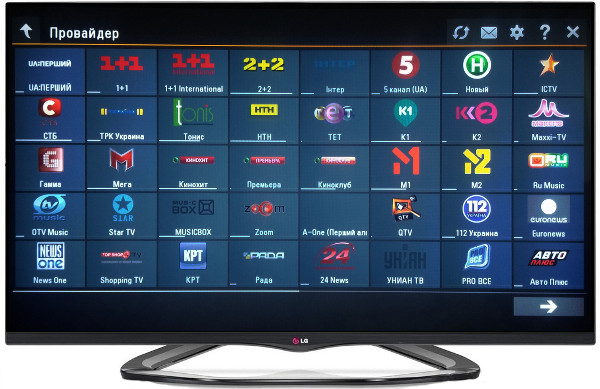
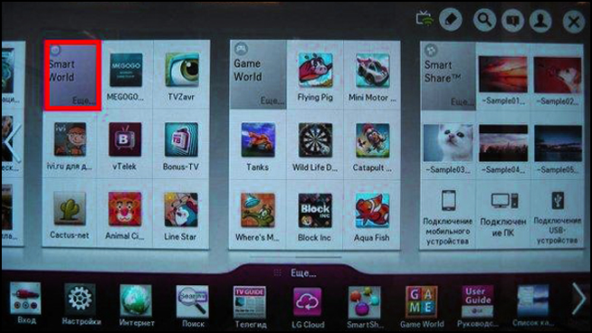
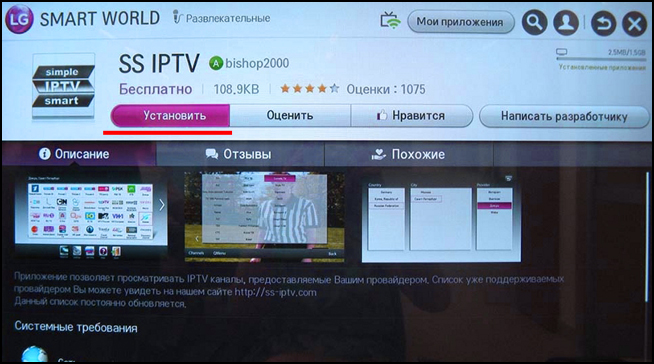
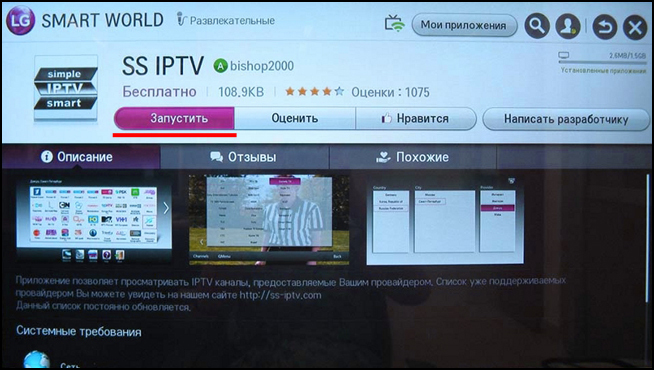

097 921 65 22
097 921 65 22- 097 812 80 28
 099 495 15 35
099 495 15 35
097 921 65 22097 812 80 28099 495 15 35IPTV ( Internet Protocol Television ) - це сучасна технологія , що дозволяє ефективно передавати телевізійний сигнал
через мережу Інтернет . На відміну від таких традиційних видів цифрового телебачення як ефірне , кабельне або
супутникове . IPTV - це повністю інтерактивний сервіс , що функціонує в Інтернеті .
Перегляд IPTV може здійснюватися як на комп'ютері , так і на телевізорі. У разі перегляду на комп'ютері необхідно
встановити додаткове програмне забезпечення , а саме VLC media player. При перегляді на телевізорі необхідно
придбати додаткове обладнання - IPTV - приставку. Телевізори зі SMART функцією мають можливість отримувати IPTV
без IPTV - приставки.
Переваги IPTV перед звичайним кабельним ТБ:
Або за URL-адресою:
Для перегляду Простір-IPTV на комп'ютері необхідно завантажити та встановити VLC media player:
Для початку натиснути на верхній панелі кнопку "Медіа". Потік IPTV телебачення можна відкрити двома способами:

Для того щоб відкрити перелік каналів, натиснути у верхньому меню кнопку "Вигляд", далі у випадаючому меню
вибрати: "Список відтворення", або просто натиснути на клавіатурі комбінацію "Ctrl+L":

Для перегляду IPTV на телефоні, планшеті або будь-якому іншому android-пристрої необхідно завантажити та встановити додаток "IPTV". Безкоштовно завантажити його можливо у Play Market.
Програма дозволяє завантажувати плейлист з каналами і програвати його за допомогою встановлених на ваш android-пристрій відеоплеєрів, таких як MX Video Player, Daroon Player, Vplayer.
Після того, як Ви встановили додаток IPTV, його потрібно налаштувати: Перейдіть в налаштування програми і в розділі «Списки відтворення» введіть адресу плейлиста: https://sprostir.github.io/iptv/list.m3u8
Насолоджуйтесь!
Для перегляду IPTV на будь-якому iOS-пристрої необхідно завантажити та встановити додаток "GSE SMART IPTV PRO". Безкоштовно завантажити його можливо у iTunes.
Програма дозволяє завантажувати плейлист з каналами і програвати його за допомогою встановлених на ваш iOS-пристрій відеоплеєрів, таких як MX Video Player, Daroon Player, Vplayer.
Після того, як Ви встановили додаток, його потрібно налаштувати: Перейдіть в налаштування програми і в розділі «Списки відтворення» введіть адресу плейлиста: https://sprostir.github.io/iptv/list.m3u8
Для перегляду IPTV на телевізорах з функцією SMART TV рекомендуємо завантажити та встановити додаток "ForkPlayer" для СМАРТ ТВ. Інструкцію по встановленню програми для різних моделей телевізорів і телевізійних приставок можна переглянути на сайті розробника - forkplayer.tv.
Програма дозволяє завантажувати плейлист з каналами і програвати його. Після того, як Ви встановили додаток, його потрібно налаштувати: Перейдіть в налаштування програми і введіть адресу плейлиста: https://sprostir.github.io/iptv/list.m3u8
Для перегляду IPTV на телевізорі LG Smart TV необхідно встановити додаток SS IPTV.

Налаштування за допомогою LG Smart World:
За допомогою пульта ДУ зайдіть в смарт- платформу телевізора, для цього натисніть кнопку «Home». Після цього необхідно вибрати віконце «Smart World»

У верхньому правому куті екрану телевізора LG знаходиться кнопка « Пошук», натискаємо її . У рядку опису необхідно ввести «SS IPTV » , після чого натиснути червону кнопку на пульті ДУ. На екрані з'явиться список доступних додатків , вибираємо SS IPTV

Після цього повинні з'явитися кілька варіантів доступних дій, ми натискаємо «Установить». Зачекайте, поки додаток повністю встановиться

Після завершення установки натисніть ««Запустить»

Якщо Ви вірно робили всі кроки, то додаток SS IPTV встановиться на Ваш телевізор. Перейдіть в налаштування програми і введіть адресу плейлиста: https://sprostir.github.io/iptv/list.m3u8
Провайдер Простір працює на ринку аналогового кабельного телебаченя більше десяти років. Кабельне телебачення - це більше 70-ти каналів українського телебачення.
Для замовлення послуги або зауважень по роботі телефонуйте в техпідтримку та залишайте заявку.
Увага! Рахунок для оплати кабельного телебачення відрізняється від рахунку на оплату за інтернет. Реквізити для оплати за кабельне телебачення:
Коректно заповнюйте графу призначення платежу, оскільки за цією інформацією кошти будуть зараховуватися на ваш абонентський рахунок.
Для отримання якісних послуг - своєчасно оплачуйте за користування кабельним телебаченням!